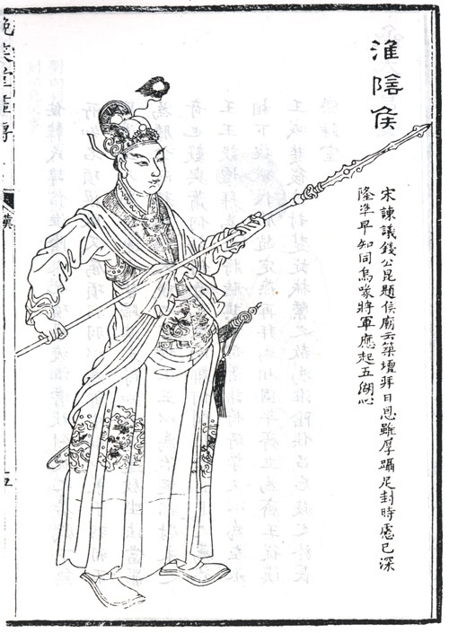
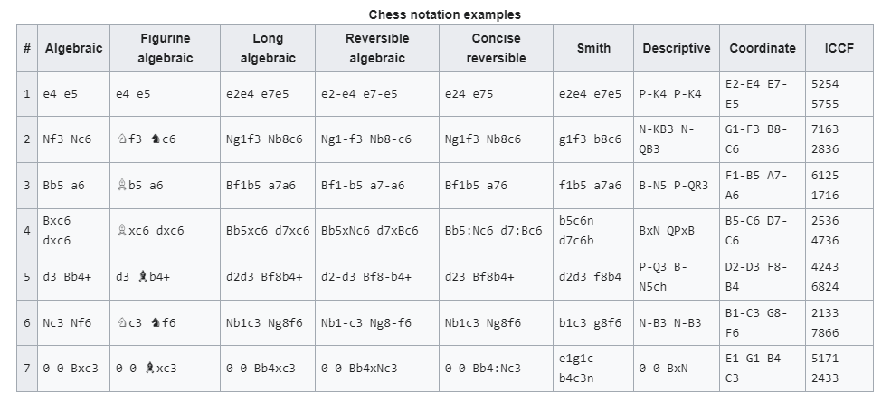

Welcome!
At this page you can discover information about chess! Even if you're new to this game, don't forget that we all start somewhere.
Welcome!
At this page you can discover information about chess! Even if you're new to this game, don't forget that we all start somewhere.
As per legend, chess originated around 200 B.C. Hán Xin, a commander, invented chess to represent an important battle in the history of China. The game was soon forgotten and resurfaced in China with new rules in the 7th century A.D. Chess became popular with the name XiangQi, which meant elephant game. However, XiangQi was quite different from today’s chess games. The pieces, chess rules, and board were different as well.
The player controlling the white pieces is named "White"; the player controlling the black pieces is named "Black". White moves first, then players alternate moves. The one and only objective of the game is to checkmate the opponents king, which means leaving him no space to escape from an attack of your pieces. Also you need to be careful so you won't get checkmated
Making a move is required; it is not legal to skip a move, even when having to move is detrimental. Play continues until a king is checkmated, a player resigns, or a draw is declared.
In addition, if the game is being played under a time control, a player who exceeds the time limit loses the game unless they cannot be checkmated.
Names of chess pieces are King, Queen, Rook, Bishop, Knight and Pawn. There is a total of 32 pieces on the board, 16 pieces each for both white and black. The Rook, Bishop and Knight come in pairs and there are 8 pawns on the board for each side. There is only one King and one Queen for each side, with white to play first.

Chess notation systems are used to record either the moves made or the position of the pieces in a game of chess. Chess notation is used in chess literature, and by players keeping a record of an ongoing game.
The earliest systems of notation used lengthy narratives to describe each move; these gradually evolved into more compact notation systems.
